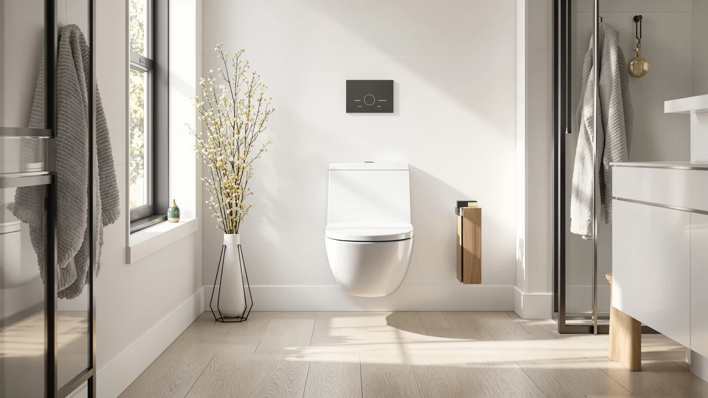

One Piece Best Toilets for Home (2026)
Prices and picks verified as of August 2026. Independent, reader-supported reviews.


Quick Answer
After comparing specs, pricing and verified owner reviews across seven models, the V VAMEI One Piece Toilet with Tankless is our top pick among the one piece best toilets for home. It pairs a compact tankless profile and an elongated bowl with a sub-$200 price, and it fits a standard 12-inch rough-in. If you want a built-in bidet wash, the Loupusuo or EPLO picks below are worth the extra cost.
Our pick: One Piece Toilet with Tankless — $199.95 Check Price on Amazon
Bottom line: our top pick is the One Piece Toilet with Tankless Design at $199.95. The best budget option is the EPLO Smart Toilet Bidet with Auto Open Close at $1.
Things to Know Before You Buy
- Every model on this list of the one piece best toilets for home is a fused one-piece design, which removes the tank-to-bowl seam where two-piece toilets most often start leaking.
- Measure your existing rough-in (the distance from the wall to the center of the floor bolts) before you order. Most one-piece toilets, including six of the seven here, use a standard 12-inch rough-in.
- Bidet and smart features add real cost. Non-electric bidet models like the LOS FLEXI add a few dollars for the plumbing hardware, while electric smart toilets like the EPLO require a nearby GFCI outlet.
- Elongated bowls are roughly two inches longer than round-front bowls and are the more comfortable choice for most adults, though they need slightly more floor clearance.
- Prices below reflect pricing at the time of publishing and can shift with Amazon promotions, so check the current price before you buy.
Finding the one piece best toilets for home starts with knowing which features actually matter once the toilet is bolted to your floor and you're living with it every day, not which ones look good in a product photo.
We compared specifications, current pricing and patterns across verified owner reviews for seven one-piece toilets ranging from $199.95 to $1,499.96. We did not install or physically test these toilets ourselves. Instead, we researched manufacturer data, rough-in requirements and what real buyers report after living with each model, then cross-checked the recurring praise and recurring complaints against the specs each brand publishes.
The V VAMEI One Piece Toilet with Tankless comes out as our top pick for most households: a compact, elongated, leak-resistant design at a price under $200. If you want a bidet wash built in, the non-electric LOS FLEXI or the warm-water Loupusuo deliver that for less than a full smart toilet costs, and the EPLO sits at the top of the lineup for anyone who wants heated seating and a warm-air dryer along with the wash function.
Why You Should Trust Us
Ilane Tall covers bathroom fixtures and home renovation products for this site, and this guide to the one piece best toilets for home follows the same research-first approach used across our other buying guides. We do not run a fake testing lab, and we do not claim to have installed or lived with every toilet on this list. Instead, we compare manufacturer specifications, verified pricing and patterns across hundreds of owner reviews to work out which models hold up once they're installed in a real bathroom.
How We Picked
To narrow the field of one piece best toilets for home, we started with one-piece construction only, since a single fused bowl and tank removes the seam where two-piece models tend to develop leaks over time. From there we compared rough-in compatibility, bowl shape, price and any bidet or smart features included at that price. We researched published dimensions and installation requirements for each model and checked them against verified buyer questions and answers to confirm they matched what's advertised. Models with a pattern of unresolved leak or flushing complaints in verified reviews were excluded, regardless of price.
How We Compared
We compared the one piece best toilets for home side by side on price, rough-in size, bowl height and included features like bidet washing or heated seats. We analysed manufacturer specifications, retailer pricing and verified owner reviews to identify recurring praise and recurring complaints for each model. Where multiple reviewers independently reported the same issue, such as a cold bidet rinse or a basic included seat, we treated that as a reliable signal and listed it as a drawback rather than smoothing it over.
Our Picks

One Piece Toilet with Tankless
What we like
- Compact tankless design saves visual and physical space
- Elongated bowl for comfortable everyday seating
- Skirted trapway design that's easier to wipe down
- Priced under $200, the lowest on this list
Flaws but not dealbreakers
- No bidet or heated-seat functions
- Flush performance depends on steady home water pressure since there's no storage tank
- Fewer finish options than the pricier picks
| Material | — |
| Size | Tankless |
The V VAMEI One Piece Toilet with Tankless earns the top spot among the one piece best toilets for home because it covers what most households actually need: a comfortable elongated bowl, a one-piece shell that resists leaks at the seam, and a price under $200. The tankless profile trims several inches off the footprint compared with standard two-piece models, which matters in cramped half-baths and older homes where floor space is limited.
The skirted design hides the trapway behind a smooth panel, and several buyers mention it makes routine cleaning faster than a toilet with an exposed trapway. Installation follows a standard 12-inch rough-in, so most homeowners can swap it in without modifying existing plumbing. The tradeoff is the tankless mechanism itself: because it draws directly from the home's water line instead of storing water in a tank, flush performance depends on the house keeping steady water pressure.

LOS FLEXI Non Electric One
What we like
- Integrated non-electric bidet nozzle for rinsing
- No wiring or outlet installation needed
- One-piece elongated bowl reduces seam leaks
- Dual-flush option for water savings
Flaws but not dealbreakers
- Bidet water pressure depends on your home's supply line
- Cold-water-only rinse since there's no electric heating element
- Bulkier profile than a standard one-piece toilet due to the built-in bidet plumbing
| Material | — |
| Size | — |
The LOS FLEXI Non Electric One-Piece toilet occupies an unusual niche among the one piece best toilets for home: it bundles a built-in bidet function into a standard one-piece shell without requiring an electrical outlet nearby. That distinction matters for older bathrooms where running a dedicated circuit to a smart toilet isn't practical or affordable.
The side-mounted control lets users adjust rinse pressure and nozzle position without extra hardware cluttering the seat area, a detail buyers call out often. The trapway and flush mechanism perform like a conventional one-piece toilet, so the bidet feature adds to the base plumbing instead of redesigning it. The main compromise is water temperature: with no electric heating element, the rinse uses whatever comes out of the cold supply line, which some owners find uncomfortable in winter.

Casta Diva Elongated One Piece
What we like
- Skirted trapway for a cleaner, modern look
- Elongated bowl for extra seating comfort
- Soft-close seat included
- Mid-range price relative to smart models
Flaws but not dealbreakers
- No bidet or heated-seat features
- Fewer finish options than budget models
- Some owners report the soft-close hinge needs careful alignment during install
| Material | — |
| Size | — |
Casta Diva's Elongated One-Piece toilet targets shoppers comparing the one piece best toilets for home who want the streamlined look of a skirted trapway without stepping up to smart-toilet pricing. The elongated bowl adds roughly two inches of seating length over a round-front design, which most adults find more comfortable for daily use.
The soft-close seat closes quietly and, based on owner feedback after months of daily use, holds up well, a detail that's easy to overlook until a standard hinge starts slamming. The one-piece construction, with no seam between tank and bowl, cuts down on the grime lines that build up on two-piece toilets over time. At $259.99 it lands above the budget tier but well under the smart-toilet category, a middle-ground pick for anyone upgrading a guest bathroom without committing to bidet features.

EPLO Smart Toilet Bidet with
What we like
- Heated seat with adjustable temperature
- Warm-water bidet wash with adjustable pressure
- Warm-air dryer reduces reliance on toilet paper
- Remote or side-panel control for hands-free operation
Flaws but not dealbreakers
- Highest price in this roundup by a wide margin
- Requires a nearby GFCI outlet, which may mean an electrician visit
- More components mean more potential points of failure over time
| Material | — |
| Size | — |
The EPLO Smart Toilet Bidet is the outlier among the one piece best toilets for home on this list, both in price and in feature count. At $1,499.96 it costs roughly six times the entry-level pick, but it also replaces a toilet, a bidet attachment, and a bathroom heater with a single fixture.
The heated seat and warm-water wash are the two features owners mention most often, especially in colder climates where a cold porcelain seat is a common complaint. The warm-air dryer works well enough to skip toilet paper for most uses, though a few owners say the dry cycle runs longer than they'd like. Because the unit needs continuous power, installation requires a grounded outlet within reach of the toilet, which can mean an added electrical cost for bathrooms that don't already have one nearby.

Smart Toilet with Warm Water
What we like
- Warm-water wash without a $1,000-plus price tag
- Adjustable water pressure and nozzle position
- Elongated one-piece bowl
- White L01 Pro Max finish matches most bathroom fixtures
Flaws but not dealbreakers
- No heated seat on this model
- Fewer wash-mode presets than premium smart toilets
- Requires an outlet near the toilet for the water-heating function
| Material | — |
| Size | WHITE L01 PRO MAX |
The Loupusuo Smart Toilet with Warm Water sits between the budget one-piece models and the full-featured EPLO on this list of the one piece best toilets for home. At $379.99, it adds a warm-water bidet wash, the single feature buyers ask for most, without the heated seat and dryer that push premium models past $1,000.
The warm-water function is the main draw in owner reviews, since a cold-water rinse is the top complaint about non-electric bidet toilets. The White L01 Pro Max finish and elongated bowl shape match standard bathroom dimensions, so it fits into most existing rough-ins without special modification. The tradeoff for the lower price is a simpler feature set: there's no seat heating, and the control panel offers fewer pressure and mode presets than the EPLO.

DeerValley Elongated One Piece Toilet
What we like
- Standard 12-inch rough-in fits most existing bathrooms
- Elongated bowl for comfortable everyday use
- One-piece construction limits seam leaks
- Competitive price under $250
Flaws but not dealbreakers
- No bidet or smart features
- Basic finish options compared with boutique brands
- Some owners note the included seat is basic and worth upgrading
| Material | — |
| Size | 12" Rough In |
DeerValley's Elongated One Piece Toilet is built for buyers comparing the one piece best toilets for home who mainly need a reliable replacement, not a feature upgrade. The 12-inch rough-in is the industry standard, so it drops into most existing bathroom layouts without repositioning the floor flange.
The elongated bowl and one-piece shell perform as expected for daily use, with no seam between tank and bowl to trap grime over time. The included seat, while functional, is on the basic side, and several buyers mention upgrading it separately for a softer close. At $233.00, it's priced close to the tankless V VAMEI pick but keeps a traditional tank, which some owners prefer for simpler maintenance and parts availability.

One Piece Toilet - Elongated
What we like
- 16-inch comfort height for easier sitting and standing
- Dual-flush option reduces water use on liquid waste
- V-shaped cover design for a distinctive look
- Elongated bowl for extra room
Flaws but not dealbreakers
- The V-shaped cover departs from standard shapes, which some owners find less familiar
- No bidet or heated-seat features
- The dual-flush handle takes some getting used to for guests unfamiliar with two-button operation
| Material | — |
| Size | 16" H & Dual Flush & V Shaped Cover |
EliteEdge's One Piece Toilet, Elongated brings comfort-height seating to the one piece best toilets for home lineup at $259.99. The 16-inch bowl height matches ADA comfort-height standards, which makes sitting down and standing up easier for taller adults, older users, or anyone recovering from a hip or knee procedure.
The dual-flush handle, with separate settings for liquid and solid waste, noticeably cuts water use compared with a single-flush tank of the same size. The V-shaped cover gives the toilet a more distinctive look than the rounded covers on the rest of this list, though a few buyers mention it takes a flush cycle or two to get used to the dual-button operation. Combined with the elongated bowl, this model leans toward comfort and efficiency over smart features.
Quick Comparison
All seven of the one piece best toilets for home in this guide are listed below by price and best use case, so you can scan them side by side before you commit.
| Product | Material | Price | Rating | Best for | Get it |
|---|---|---|---|---|---|
| One Piece Toilet with Tankless | — | $199.95 | 4 | Small bathrooms, tight budgets | View on Amazon → |
| LOS FLEXI Non Electric One | — | $239.99 | 4 | Bidet function without wiring | View on Amazon → |
| Casta Diva Elongated One Piece | — | $259.99 | 4 | Modern skirted look | View on Amazon → |
| EPLO Smart Toilet Bidet with | — | $1,499.96 | 4 | Full smart-bidet features | View on Amazon → |
| Smart Toilet with Warm Water | — | $379.99 | 4 | Warm-water wash, mid-range price | View on Amazon → |
| DeerValley Elongated One Piece Toilet | — | $233.00 | 4 | Standard rough-in replacements | View on Amazon → |
| One Piece Toilet - Elongated | — | $259.99 | 4 | Comfort-height and dual flush | View on Amazon → |
The Competition
We also researched several two-piece toilets that turn up in one piece best toilets for home searches, but excluded them from this list because the separate tank-to-bowl seam is the most common source of slow leaks reported in verified owner reviews. A one-piece shell removes that failure point entirely, which is why every pick above uses fused construction.
We looked at round-front bowl variants of some of these same models. Round bowls save a couple of inches of clearance in cramped bathrooms, but owners of round-front models report less comfortable seating for adult use, so we defaulted to elongated bowls except where a manufacturer only offers the round-front configuration.
Several additional smart-toilet models in the $600 to $1,000 range were also reviewed. We left them out because their feature set overlapped heavily with either the mid-range Loupusuo pick or the flagship EPLO model, without a clear enough advantage in verified reviews to justify a separate slot on this list.
For most households shopping the one piece best toilets for home category, the V VAMEI One Piece Toilet with Tankless remains our top recommendation. It covers the core requirements of a compact, leak-resistant, elongated one-piece toilet at the lowest price on this list, and buyers who want bidet or smart features can step up to the Loupusuo or EPLO picks above.
Frequently Asked Questions
Related Guides
If you're still narrowing down the one piece best toilets for home for your bathroom, these guides cover the questions that come up most before and after you buy.